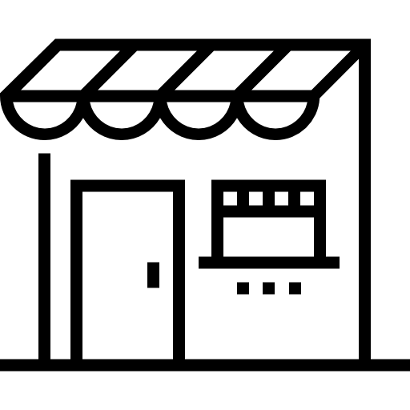

Productos
Domicilios
Atencion Cliente

Colombia es mundialmente reconocida por producir uno de los cafés más apreciados. Su sabor suave, aroma intenso y cuerpo equilibrado lo han posicionado como un referente en la industria cafetera. El sabor y el aroma que distinguen una taza de café colombiano de otros cafés se debe al metódico trabajo de los cafetaleros. Empezando por el cultivo de las semillas, pasando por la cosecha para elegir los granos en su punto de maduración hasta el procesamiento de los granos de café: secado, tueste y envasado.
Informacion
Aunque todos los cafés colombianos comparten características comunes, existen diversas variedades y regiones productoras que ofrecen perfiles de sabor únicos.

Cultivado en una amplia variedad de regiones cafeteras, pero siempre en condiciones óptimas para la producción de café de alta calidad Ofrece un sabor suave y equilibrado, con una acidez ligera y un cuerpo medio. Es un café muy versátil que se adapta a diferentes métodos de preparación.
Mutación natural de la variedad Typica, originaria de Brasil. Sin embargo, Colombia ha logrado adaptar esta variedad a sus condiciones climáticas y producir cafés de excelente calidad. Su grano es más pequeño y redondeado que el de la Typica, lo que le confiere un sabor más intenso y complejo. Destaca por sus notas frutales, como cítricos y berries, y una acidez brillante.

Cultivado en las zonas más altas de las regiones cafeteras colombianas, como el Eje Cafetero, donde las condiciones climáticas son más frías y las noches más largas. Su grano es de alta densidad y produce una taza con un sabor complejo y aromático, a menudo con notas de chocolate, caramelo y frutos secos. La acidez es equilibrada y el cuerpo es robusto.